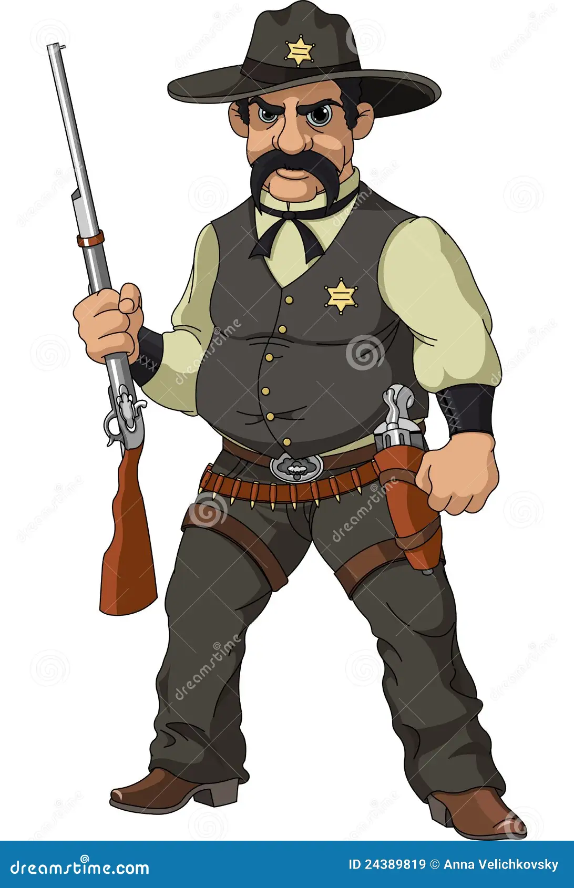

Você se aproxima do barman para tentar conseguir algumas informaçoes sobre os Foras da Lei
faça sua escolha:

- vejo o Barman e o Fora da Lei se enfrentando e entao após o ocorrido aplico a lei
- acompanhado de meus guardas vou para o lado de fora para um duelo com o Fora da Lei
- revido a ameaça feita pelo barman